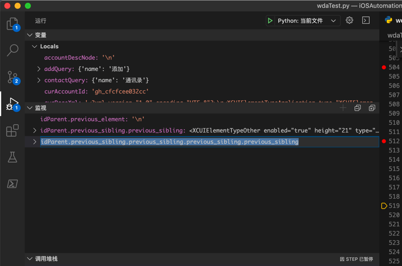

Debug的通用操作逻辑
关于调试代码、程序时，有些通用的操作和含义，现解释如下：
Debug的通用操作
常见的和调试Debug有关的操作：
- 开始调试
继续运行=Continue：一直运行，知道代码运行完毕了，或者遇到了断点而停下来- Stop：停止运行
- Step Over：单步执行
- 如果不希望进入每行代码内部，比如函数的内部，往往最常用这个单步执行
- Step Into：单步执行，但是遇到函数的话，就进入函数内部执行
- Step Out：从函数内部跳出来
- Run To Cursor：运行到鼠标位置
- 指的是，鼠标点击到某行代码后，然后让代码开始运行，直到鼠标所在的行，再停下来
- 比如，调试到一段for循环，调试了前几次循环，觉得没问题了，接下来的循环此处就不需要继续调试了，希望运行到for循环后面的代码，则可以鼠标点击到对应行，然后用Run to Cursor：
- 即可直接（运行完剩下的循环）跳出for，到对应的行：
VSCode
的按钮中的解释，很形象：
- VSCode中的Deubug通用逻辑
Continue=F5：继续运行 -》直到运行完毕或者遇到断点停下来Step Over=F10Step Into=F11Step Out=Shift + F11Restart=Shift + Command + F5Stop=Shift + F5
PyCharm
比如：
PyCharm中的按钮：Command+D开始Debug后：
接着就可以看到各个Debug调试按钮可用了：
Watch监视
监视：有啥作用？何时使用？
举例说明：
折腾：
【未解决】Python的wda中从搜索结果的页面的xml源码中解析提取公众号的中文名称
期间，本以为：
idParentPrev = idParent.previous_sibling
就是我们希望的元素：
<XCUIElementTypeOther type="XCUIElementTypeOther"
enabled="true" visible="true" x="88" y="126"
width="271" height="23">
<XCUIElementTypeStaticText
type="XCUIElementTypeStaticText"
value="动卡空间" name="动卡空间" label="动卡空间"
enabled="true" visible="true" x="88" y="126"
width="70" height="22" />
</XCUIElementTypeOther>
结果实际上却是：
\n
即一个空行，不是我们要的内部有公众号中文名的XCUIElementTypeOther
此时就希望：能尽快搞清楚，具体代码应该怎么写，才能获取到上面的真正希望的节点
同时却又不希望重新启动调试去测试不同的代码的效果
此处，就可以利用上：监视 的功能了
即：想办法去写一些简答的代码，去看看获取到的节点，是不是我们要的
此处，对于BeautifulSoup来说，就可以继续用previous_sibling
通过尝试发现：
idParent.previous_sibling.previous_sibling.previous_sibling.previous_sibling

即4次的前一个兄弟节点，才找到我们要的内容：
以及想要实现更好的定位逻辑，经深入分析后，发现：
list(idParent.previous_siblings)
中的index=3，就是我们要找的元素：

由此实现了我们的目的：搞清楚代码怎么写，才能定位找到我们要的节点
引申：
在合适的时候，通过监视，输入代码（表达式），即可实时看到输出结果
-》从而实现实时的调试（虽然相对有限的）代码，实现你要的效果：比如此处是找到我们要的节点
其他典型情况：输出变量的值，看看是否符合你的预期等等